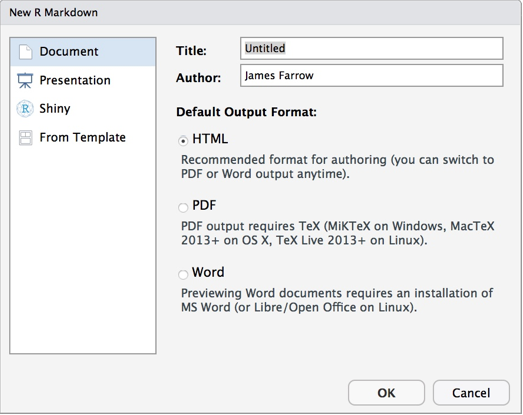
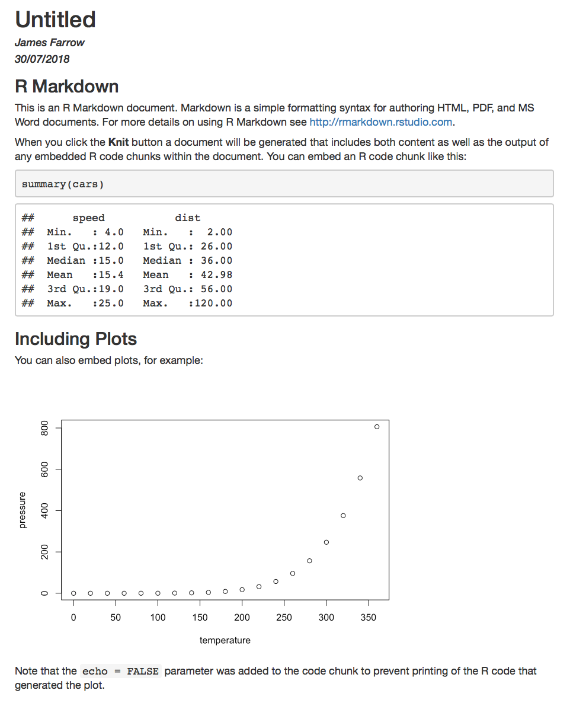
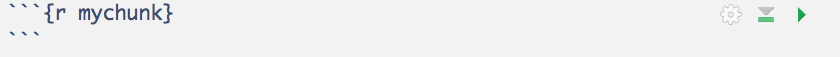

Overview
This tutorial looks at Literate Programming using the knitr package for \(\textsf{R}\).
Knitr lets us write documents which are both
- programmes — they can perform calculations and analyses
- reports or scientific papers — they can be something readable by humans
Mixing the two together means we finish one when we finish the other. No more getting to the end of the analysis and then having to face the write up. What we will examine here is a variant of the literate programming paradigm introduced by Donald Knuth.
A report that is simultaneously the analysis and a document describing the analysis enables reproducibility and verification
© Copyright 2022 UNSW Sydney. All rights reserved except where otherwise stated.
Literate programming
Literate programming is a programming paradigm introduced by Donald Knuth in which a program is given as an explanation of the program logic in a natural language, such as English, interspersed with snippets of macros and traditional source code, from which a compilable source code can be generated.
Here we will be using a variant where a document with the output of the executed code embedded in it is produced as the final artefact rather than a computer programme.
Knuth said:
“I had the feeling that top-down and bottom-up were opposing methodologies: one more suitable for program exposition and the other more suitable for program creation. But after gaining experience with WEB, I have come to realize that there is no need to choose once and for all between top-down and bottom-up, because a program is best thought of as a web instead of a tree. A hierarchical structure is present, but the most important thing about a program is its structural relationships. A complex piece of software consists of simple parts and simple relations between those parts; the programmer’s task is to state those parts and those relationships, in whatever order is best for human comprehension not in some rigidly determined order like top-down or bottom-up.”
In practice this manifests itself as different parts of the task informing and helping the other
- concentrating on the detail can help define what the larger task is
- concentrating on the task as a whole, refining as we go can lead to an understanding of what detail is necessary
In a document such as a report
- writing the code to execute the steps of an analysis can help detect inconsistencies and errors in our explanations
- writing explanations for our code can help clarify what we’re trying to do
Having these two tasks in close proximity to one another in the document and performed contemporaneously allows them to reinforce and help one another.
Literate programming provides higher-quality programs, since it forces programmers to explicitly state the thoughts behind the program, making poorly thought-out design decisions more obvious. Knuth also claims that literate programming provides a first-rate documentation system, which is not an add-on, but is grown naturally in the process of exposition of one’s thoughts during a program’s creation. [Wikipedia]
This approach helps us understand what we’re trying to do and helps others understand what we’re trying to do. Fundamentally it improves the quality of our communication.
In RStudio we will be using knitr to produce our communication artefacts.
An aside…
Knuth called his first implementation of this idea WEB.
In contained a preprocessor to take the source document and produce the compilable programme on the one hand (tangle) and the human readable documentation on the other (weave).
Knitr is a wordplay on weave.
Knitr
RStudio has integrated facilities for editing Rmarkdown (.Rmd) files.
Rmarkdown is a variant of markdown, a lighweight text-based markup language developed by John Gruber for use at daringfireball.
Knitr uses pandoc to convert the markdown text to other formats.
RStudio

The File >> New File menu has an option for R markdown…
It allows use to choose different output formats:
- HTML, PDF, Word, LATEX
- slides
- even interactive documents with shiny apps embedded
Choosing some of these formats may require extra R packages or other third-party software to be installed (although generally RStudio handles this automatically for you).
Managing documents with git
Rmarkdown files are text files and as such they are ideal for management with git.
Don’t forget to initialise each project with git either on creation or subsequently. If you forgot or are bringing an existing project under revision control RStudio lets you ‘turn on’ git for an existing project using the Tools >> Version Control menu or you can turn it on manually by running git init on the command line in the root folder of a project.
Don’t forget to commit your work regularly as necessary!
Rmd files
Whereas an R script contains purely R code, an Rmd file is different.
Parts of the document are (marked up) text for reading by a human.
Parts of the document are R code for excuting by the computer.
The code sections are run, the text sections are formatted and the two are ‘knitted’ together by inserting the output of the code into the formatted text to create the final document.
The final document can be an HTML, PDF or even a Microsoft Word document.
The markup (rmarkdown) is designed to be a simple notation to conveniently indicate things like bold or italic text, or heading and lists. As such it doesn’t do everything but it does most of what is needed.
Because of the choice of output formats, if finer control over the finished document is required it is not uncommon to do a first phase of document preparation in RStudio using knitr and then transfer the produced document to Microsoft Word for further editing. (Note that Word does not play nicely with git and so there are disadvantages to this as well as advantages.)
Here is a sample Rmd file
---
title: "Untitled"
author: "James Farrow"
date: "30/07/2018"
output: html_document
---
`
``{r setup, include=FALSE}
knitr::opts_chunk$set(echo = TRUE)
`
``
## R Markdown
This is an R Markdown document. Markdown is a simple formatting syntax for authoring HTML, PDF, and MS Word documents. For more details on using R Markdown see <http://rmarkdown.rstudio.com>.
When you click the **Knit** button a document will be generated that includes both content as well as the output of any embedded R code chunks within the document. You can embed an R code chunk like this:
`
``{r cars}
summary(cars)
`
``
## Including Plots
You can also embed plots, for example:
`
``{r pressure, echo=FALSE}
plot(pressure)
`
``
Note that the `echo = FALSE` parameter was added to the code chunk to prevent printing of the R code that generated the plot.The final document looks like this

Compare the different parts of the two documents.
Markdown
Markdown is quite expressive and can be used to embed things like hyperlinks, images, numbered and unnumbered lists in a document.
See http://rmarkdown.rstudio.com for more information.
Basic markup using markdown syntax
Markdown is plain text with a little bit of notation to control formatting
*...*or_..._can be used to indicate italic**...**or__...__can be used to indicate bold# Title Textcan be used to format a heading with the text ‘Title Text’- the number of ##’s indicates the heading level, start with 2
- the title of the document (from the metadata) is usually rendered automatically as a first level heading
^...^is used to mark up superscript text~~...~~is used to strike through text
| Markup | Result |
|---|---|
*italic* or _italic_ |
italic |
**bold** or __bold__ |
bold |
## Heading |
Heading |
x^2^ |
x2 |
~~strike~~ |
Lists
Lists are formatting using * or + for unordered lists (the actual symbol doesn’t matter) and using numerical prefixes for ordered lists. For ordered lists, only the first number at each level matters. Subsequent items at the same level will be sequentially numbered starting with the next integer.
Ordered lists can also be given using alphabetical a. or Roman numerals labelling i..
* item
+ item
* sub itemrenders as
- item
- item
- sub item
while
2. first item
5. second item
1. first sub item
9. second sub item
6. third sub item
0. third item
1) first
1) second
1) thirdrenders as
- first item
- second item
- first sub item
- second sub item
- third sub item
- third item
- first
- second
- third
List styles may be mixed
1. one
1. two
i. roman
i. roman
i. roman
1. three.
* unordered
* unordered- one
- two
- roman
- roman
- roman
- three.
- unordered
- unordered
Hyperlinks
Hyperlinks are marked up by enclosing the text of the anchor with [...] and following it with the link enclosed in (...).
The text enclosed by the [...] may be marked up.
Thus, [_Markdown Basics_](https://rmarkdown.rstudio.com/authoring_basics.html) renders as Markdown Basics.
Images
Images are included using a similar notation to hyperlinks
For files local to a project a file relative URL can be specified
So for example in this tutorial
renders as
Figure: A series of green cogs
An aside…
For documents being rendered to HTML, arbitrary HTML can be included in the document.
If we wanted to centre the previous image we could write
<div style="text-align: center;">

</div>which would then render as
Figure: A series of green cogs
Equations
A substantial subset of LaTeX equations can be used. See Adding equations to your document.
Inline equations are surrounded by $.
Let $x = \sqrt{a_i^2 - b_j^2}$ as previously.renders as
Let \(x = \sqrt{a_i^2 - b_j^2}\) as previously.
Block equations are surrounded by $$ and get centred on a new line.
$$ \large{ \sigma^2 = \frac { \sum_{i=1}^{n} \left( x_i - \bar{x} \right) ^ 2} {n-1} } $$\[ \large{ \sigma^2 = \frac { \sum_{i=1}^{n} \left( x_i - \bar{x} \right) ^ 2} {n-1} } \]
Tables
Simple tables can be rendered in text and will be formatted appropriately. Cells spanning multiple columns and/or rows are not available using this simple format.
The code
| Markup | Result |
|:-------------------------------|:-------------------------------------------------|
| `*italic*` or `_italic_` | _italic_ |
| `**bold**` or `__bold__` | **bold** |
| `## Heading` | <span style="font-size: 150%">**Heading**</span> |
| `x^2^` | x^2^ |
| `~~strike~~` | ~~strike~~ |renders as
| Markup | Result |
|---|---|
*italic* or _italic_ |
italic |
**bold** or __bold__ |
bold |
## Heading |
Heading |
x^2^ |
x2 |
~~strike~~ |
and in fact this is the markup from the first section of this document.
These types of tables work well for static information but don’t work at all for dynamic data.
There are better ways of including tables based on data held in, say, data frames manipulated by your program code, as we will see later.
Code chunks
Code is embedded in a markdown document using `...` for inline code and ```...``` for blocks of code.
Code is usually rendered in a monospaced font and set in a different color and/or on a different background.
For example
The `master` branchrenders as
The master branch
while
`
``
cube <- function(x) {
x^3
}
`
``usually renders in an enclosed panel thus.
cube <- function(x) {
x^3
}
The ability to include chunks of static code is useful but literate programming is all about the ability to include chunks of code which are executed.
Active code chunks
The general format of an active code chunk is
`
``{r <chunk-name>, <options>}
<programme-code>
`
``The r means this is R code and having this text here after the initial ``` marks it as an active code chunk.
The options control things like whether the source code gets included in the document, whether the code gets run and whether the output from running the code is included in the document.
In RStudio a code chunk has some control on the right hand side of the edit pane.


The first icon is used to control some of the settings for the chunk.
The second icon runs all code chunk previous to this chunk. This is useful when editing a complex analysis where the setup may take a while to compute. The setup (all previous chunks) can be run once and then this code run multiple times while working on it.
The third icon runs the code in this chunk. If the code follows good practice of not overwriting state but creating new variables, then the code chunk can be run multiple times and have the same result.
An aside…
We call code that can be run multiple times giving the same result idempotent.
The code
n <- n + 1is not idempotent. Because it modifies one of its inputs the value of n will increase every time the code chunk is run.
The code
m <- n + 1is idempotent because it does not modify its inputs. Every time it is run m will have the same value.
Setting up
The first chunk is usually a special chunk to set things up and is usually called something like ‘setup’)
`
``{r setup, include=FALSE}
knitr::opts_chunk$set(echo = TRUE)
`
``The include=FALSE option says ‘don’t include this chunk in the final document’.
The code inside the chunk sets the echo option default for all knitr chunks processed by knitr to be TRUE meaning by default all chunks will have their output placed into the document.
This saves us from putting echo=TRUE as an option on every chunk
Inline \(\textsf{R}\) code
You can also include the results of \(\textsf{R}\) calculations directly into text, rather than as code chunk outputs. This is called ‘inline code’. Place an r after the single backtick used to surround an inline code snippet similar to the way we place {r ...} at the start of a chunk. This will cause the snippet to be executed and replaced with its output.
Thus, text such as
The 97.5% percentile for the _t_-distribution with 24 degrees of freedom is `
r qt(0.975, 24)`.renders as
The 97.5% percentile for the t-distribution with 24 degrees of freedom is 2.0638986.
The code with the inline code block can reference values and objects created in earlier code blocks — this gives you a way to automatically insert calculated values into your text which are updated every time the code and/or the underlying data change.
The chunks as a collective programme
Consider all the chunk in a file to be one long script when joined together.
The chunks are run one after the other in sequence when the document is processed.
Changes in state and variables created and modified by earlier chunks are visible to later chunks.
For example consider the following fragment loosely based on a section of the Chapter 1 dplyr tutorial
First we set up our data frame:
`
``{r create-dataframe, echo=TRUE}
df = data.frame(id=c("a", "b", "c", "d", "e"))
`
``
then we take a sample
`
``{r take-sample}
dplyr::sample_n(df, 10, replace=TRUE)
`
``When we run knitr we get
First we set up our data frame:
Notice how the code chunks are execute and included in the document depending on the chunk settings and how the second chunk depends on the first chunk. (The first chunk sets up df and the second refers to it.)
Knitr in RStudio
In RStudio, Rmarkdown documents have a ‘Knit’ button on the toolbar which builds the output document by performing the following steps.
- format the markdown
- run the R code
- join everything together into a final document
The metadata options control whether we get HTML, PDF, or Microsoft Word files as output.
Document preparation workflow
The code and text of our document grow together, informing each other’s development.
Once we finish one we pretty much have finished the other since everything is bundled together.
Knitr runs the chunks of code like one big \(\textsf{R}\) programme and inserts the output results (and sometimes the input code) into the document
Don’t forget to use add and commit regularly to track your development. When collaborating include push and pull in the mix.
Summary
This concludes our overview of knitr.
More information is available online at